Plotting data¶
The plot module is the visual layer of the IGEM client. Where
describe summarises, modify cleans, analyze infers and report
enriches, plot consumes those typed outputs and turns them into
matplotlib figures: Manhattan and QQ plots for association scans,
two-panel dotplots for top hits, before/after comparisons of
phenotype filters, heatmaps of pairwise interactions, and a Miami
plot for replication studies.
Two surfaces share the same defaults:
Bridges (
from_results,from_describe,from_modify,from_interaction) — accept the typed IGEM objects directly (RegressionResults,Phenotypes,Genotypes) and dispatch to the right primitive.Primitives (
manhattan,qq_plot,dotplot,distribution,heatmap,miami_plot, …) — pure matplotlib functions that operate onpd.DataFrame/pd.Series/ arrays. Useful when you already have a frame in the right shape, or for finer styling control.
Both are reachable from the igem.plot.X facade and from the
igem.modules.plot.X free-function form.
Tip
Everything on this page is local and read-only — no server
calls, no file writes unless you pass output_path=.... Functions
return a matplotlib.figure.Figure that the caller owns; nothing is
mutated, nothing is displayed implicitly.
Note
How figures appear depends on where you run them:
Jupyter / IPython with
%matplotlib inline: returning aFigureas the last expression renders inline automatically.Plain Python script: nothing is shown unless you call
plt.show()or save withoutput_path=.... There is no implicitplt.show()— this matches the matplotlib / seaborn / statsmodels convention and avoids blocking on headless HPC nodes.CLI / SLURM: the
Aggbackend is the default in headless environments — passoutput_path=...to save the figure as an image (or PDF forfrom_describe).
Note
No CLI commands for this module. Each call returns a Figure —
there is no useful single-line terminal artefact, so a CLI form would
have nothing meaningful to print. Use Python or a notebook; pass
output_path=... when you want a file.
By the end of this page you will know how to:
Visualize an
analyzeresult withfrom_results— Manhattan, QQ, top-hits dotplot, and the FDR / Bonferroni Manhattan variants.Generate multi-page distributions for QC with
from_describe.Compare before / after a
modifyoperation withfrom_modify(works for bothPhenotypesandGenotypes).Visualize GxG / GxE interactions with
from_interaction— pairwise heatmap or top-pairs dotplot.Discover the right plot for a result with
suggest_plots(obj)/result.suggested_plots().Use the primitives directly when you already have a DataFrame in the right shape (escape hatch for custom styling).
Save any figure to disk with
output_path=....
All examples below use the IGEM facade — same pattern as
Loading data:
from igem import IGEM
with IGEM() as igem:
fig = igem.plot.from_results(results, kind="manhattan")
The same call is also available as a free function when an IGEM
instance is not needed:
from igem.modules.plot import from_results
fig = from_results(results, kind="manhattan")
The two forms are interchangeable; the rest of this page uses the facade form.
Tip
Every figure on this page is reproducible from the showcase notebook
docs/caderno/notebooks/plot_module_examples.ipynb.
Open it in Jupyter to step through every primitive and bridge with
synthetic data already wired up.
1. from_results — visualize association results¶
The bridge accepts a RegressionResults directly (the standard return
type of igem.analyze.association_study, igem.analyze.ewas, and
igem.analyze.gwas) and picks the most appropriate primitive based on
the result size and on whether the frame has been annotated.
results = igem.analyze.association_study(phen, outcomes=["BMI"], ...)
with IGEM() as igem:
igem.plot.from_results(results, kind="auto")
kind="auto" (default) picks manhattan when the result has at
least 50 rows, otherwise a sorted top-hits dotplot — the small
result is more informative as a ranked list than as a scatter.
Manhattan¶
When the result has been passed through RegressionResults.annotate(igem)
(picking up chromosome / start_position from gene_annotations),
the bridge auto-detects the genomic columns and lays the x-axis out
per chromosome with alternating colours:

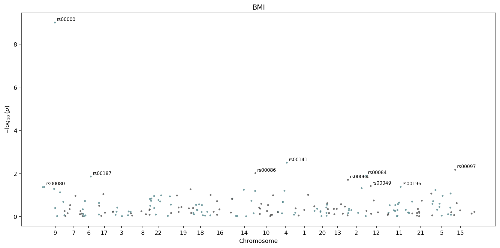
igem.plot.from_results(results.annotate(igem), kind="manhattan") —
chromosomes are detected automatically and laid out side by side.¶
Without annotate, the x-axis falls back to a row index. The top
num_labeled hits (default 10) get text labels next to them.
QQ plot with genomic inflation¶
igem.plot.from_results(results, kind="qq")

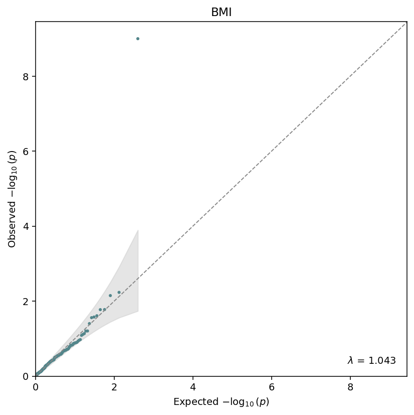
Observed vs expected \(-\log_{10}(p)\), with the genomic-inflation factor \(\lambda\) annotated in the corner. The grey band is the \(1 - \alpha\) confidence envelope under the null.¶
The QQ primitive also exposes genomic_inflation(pvalues) as a
standalone helper:
from igem.modules.plot.primitives.qq import genomic_inflation
lam = genomic_inflation(results.df["beta_pvalue"])
Top-hits dotplot¶
For small results, or as an explicit top-n view:
igem.plot.from_results(results, kind="top", n_top=12)

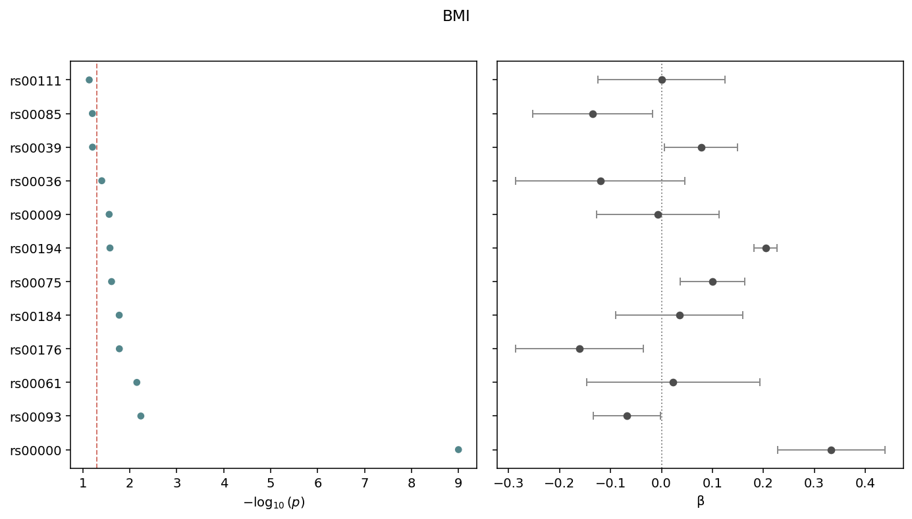
Two-panel dotplot: \(-\log_{10}(p)\) on the left, \(\beta\) with 95% confidence intervals on the right. Sorted by p-value, smallest at the top. The dashed line marks the cutoff (default 0.05).¶
FDR / Bonferroni Manhattan variants¶
Both variants reuse the standard manhattan body and only add a
threshold line at the appropriate level. Bonferroni uses
alpha / n_tests against the raw p-values:
igem.plot.from_results(results, kind="manhattan_bonferroni", cutoff=0.05)

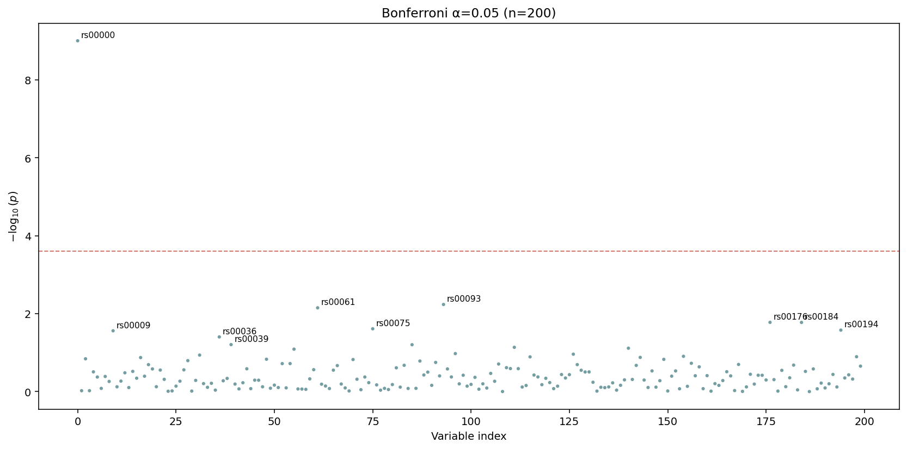
The dashed red line is drawn at \(\alpha / n\) — passing tests show up above it. The default title encodes both \(\alpha\) and \(n\).¶
FDR plots the corrected p_corrected column directly with a line
at q_threshold. Apply the correction first:
results_fdr = results.with_correction("fdr_bh")
igem.plot.from_results(results_fdr, kind="manhattan_fdr", cutoff=0.05)

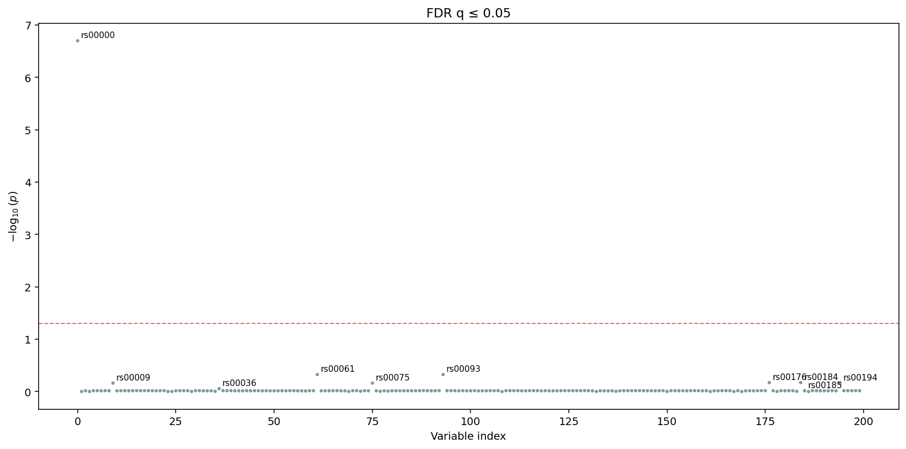
The y-axis here is \(-\log_{10}\) of the corrected q-value. The
threshold line sits at q_threshold directly — no further
adjustment.¶
2. from_describe — distributions for QC¶
The bridge classifies each column through describe.summarize
(binary / categorical / continuous) and renders the matching
primitive per column. Panels are laid out in a grid; once a page is
full a new Figure is started, so the function returns
list[Figure] — one per page.
figs = igem.plot.from_describe(phen)
print(f"{len(figs)} page(s) generated")

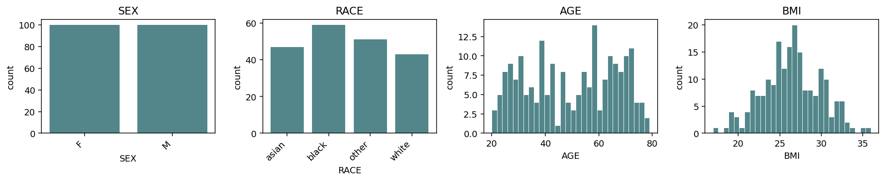
Default grid=(3, 4) accommodates 12 panels per page. Continuous
columns get histograms; binary / categorical columns get bar charts.
Columns are sorted by kind (binary → categorical → continuous) so
the layout is consistent across phenotype frames.¶
Switch the continuous representation with continuous_kind
("hist", "box", "violin", "qq"):

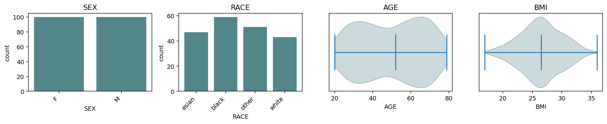
continuous_kind="violin" — same grid, smoothed density per
continuous column.¶
For multi-page output, pass a .pdf path:
figs = igem.plot.from_describe(phen, output_path="qc.pdf")
# 'qc.pdf' now contains one page per Figure
Only .pdf is accepted as output_path — distributions are
inherently multi-page and PdfPages is the only natural single-file
container. Per-figure image saves stay the caller’s responsibility:
for i, fig in enumerate(figs):
fig.savefig(f"qc_page_{i}.png", bbox_inches="tight")
3. from_modify — before vs after¶
from_modify compares one variable / metric before and after a
modify operation. Dispatch is by input type:
Both inputs
Phenotypes—var=(column name) is required; kind is auto-detected from the combined values.Both inputs
Genotypes—var=is ignored;metric=selects the per-variant column ("maf"or"call_rate"). The bridge callsigem.describe.variant_statson each input, so be mindful with biobank-scale data.
Phenotypes — continuous overlay¶
phen_clean = igem.modify.transform(phen, "BMI", method="log")
phen_clean = igem.modify.drop_outliers(phen_clean, ["BMI"])
with IGEM() as igem:
igem.plot.from_modify(phen, phen_clean, var="BMI")

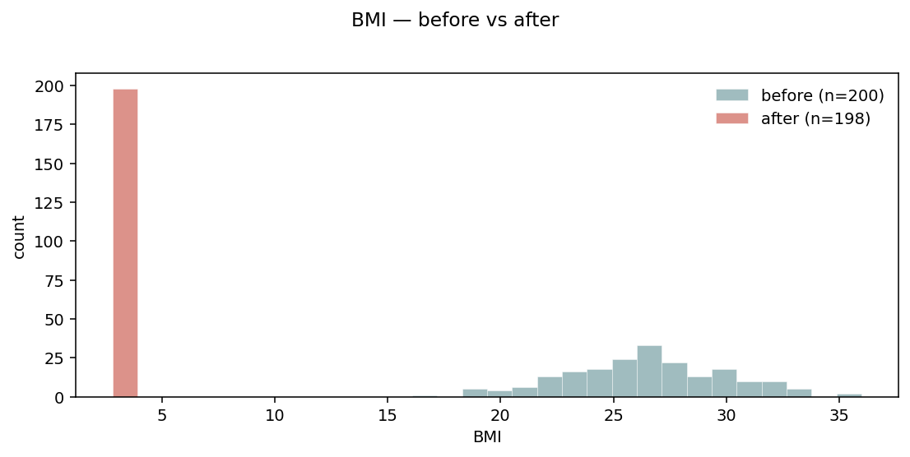
Default layout="overlay" — two semi-transparent histograms on the
same axes. Sample counts go in the legend so the magnitude of the
filter is visible.¶
Phenotypes — side-by-side¶
When the distributions overlap heavily and overlay becomes hard to read:
igem.plot.from_modify(phen, phen_clean, var="BMI", layout="side_by_side")

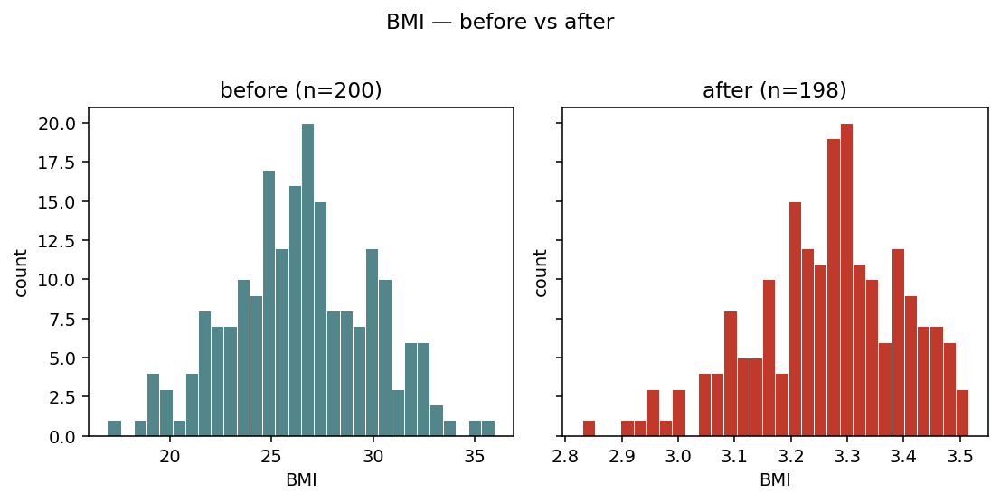
layout="side_by_side" — two adjacent panels with a shared y-axis.
Easier to compare distribution shapes when the change is subtle.¶
Phenotypes — categorical¶
For categorical (or binary) variables, overlay is replaced by side-by-side bars per level:

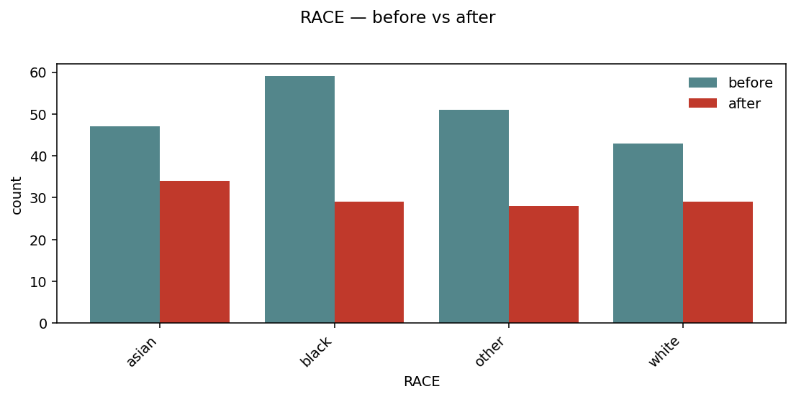
Per-level bars, before and after, sharing the same x. Useful to spot which strata get dropped by a filter.¶
Genotypes — MAF / call rate¶
For Genotypes inputs, the bridge plots a per-variant metric. By
default it compares minor allele frequency:
geno_clean = igem.modify.filter_maf(geno, threshold=0.05)
igem.plot.from_modify(geno, geno_clean, metric="maf", layout="side_by_side")

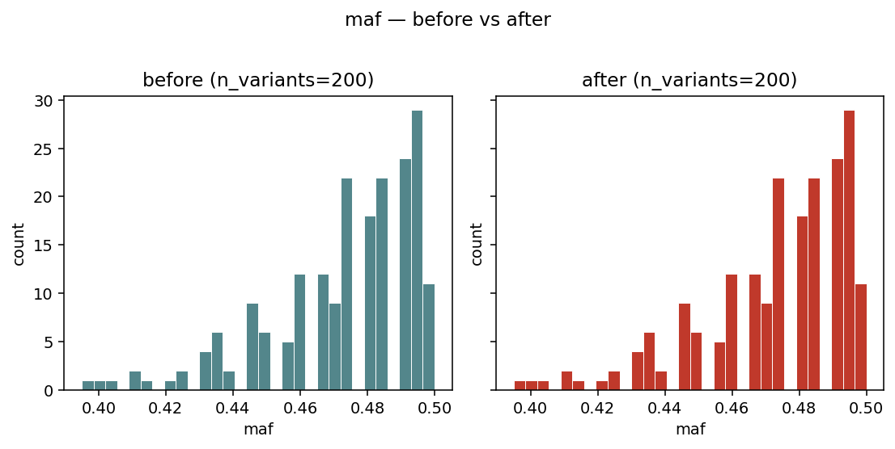
Side-by-side histograms of variant_stats(geno)["maf"] — visual
sanity check that a MAF filter actually removed the low-frequency
tail.¶
4. from_interaction — GxG / GxE pairs¶
The bridge expects the long-format output of
igem.analyze.interaction_study (one row per (term1, term2) pair).
It validates the schema and rejects regular regression results with a
clear message — those should go through from_results instead.
kind="auto" picks heatmap when the universe of unique terms
is small enough to show as a matrix (≤ 30 terms); otherwise it falls
back to a top_pairs dotplot.
Heatmap¶
interaction = igem.analyze.interaction_study(phen, outcomes=["BMI"], ...)
igem.plot.from_interaction(interaction, kind="heatmap")

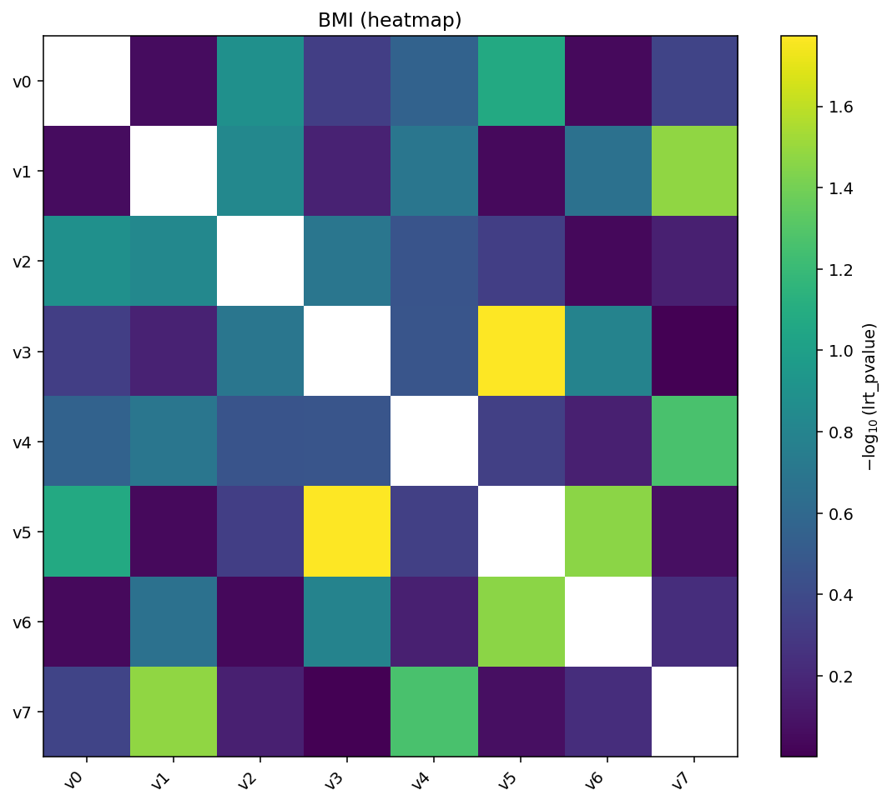
Heatmap of \(-\log_{10}(p)\) for every pair. The matrix is symmetric by default, so the same pair appears at \((a, b)\) and \((b, a)\).¶
Add hierarchical clustering and per-cell annotations for deeper inspection:
igem.plot.from_interaction(interaction, kind="heatmap",
cluster=True, annotate=True)

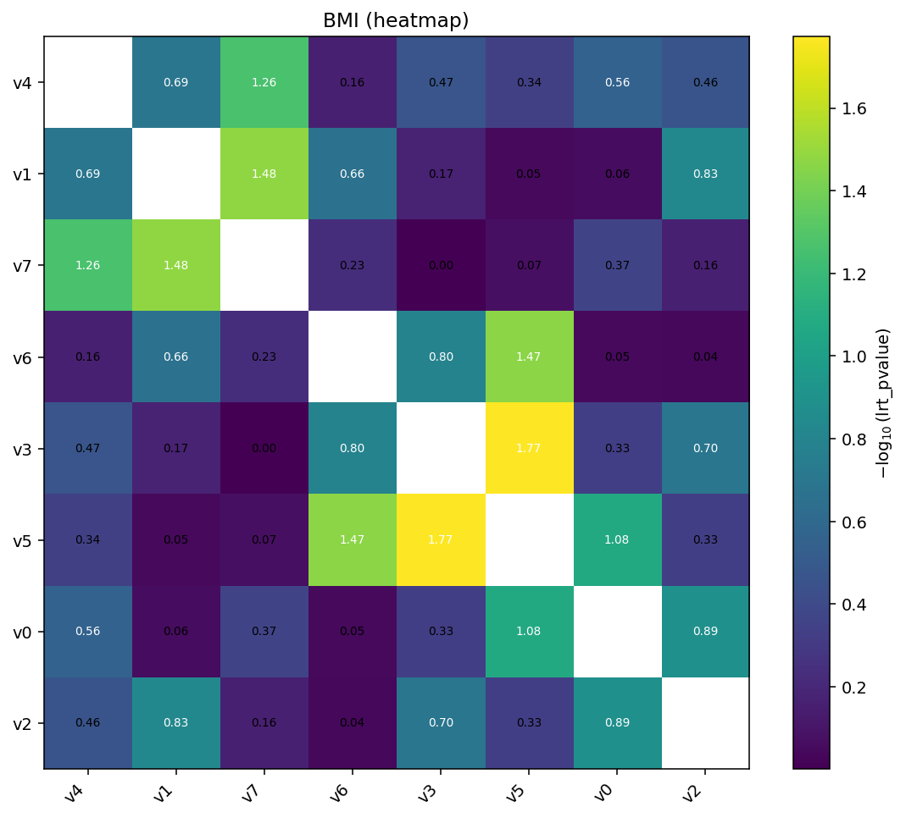
cluster=True reorders rows and columns by single-linkage on the
absolute value matrix. annotate=True writes the (transformed) value
in each cell.¶
Top-pairs dotplot¶
When the universe of terms is too large for a matrix:
igem.plot.from_interaction(interaction, kind="top_pairs", n_top=10)

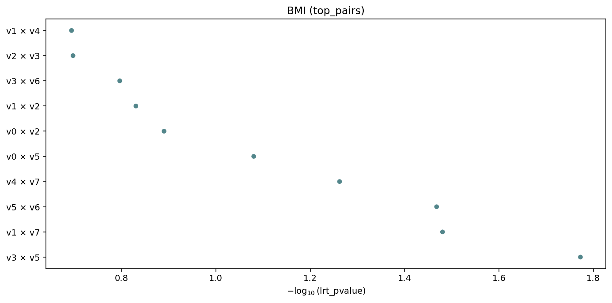
Top-n interactions ranked by value (default lrt_pvalue),
labelled term1 × term2. Auto-fallback when there are too many
unique terms for a heatmap.¶
5. Suggest engine — discovering the right plot¶
A static rule engine returns the plot kinds that make sense for any
IGEM result type, without you having to read these docs. The
RegressionResults family exposes it as a method; the free function
igem.plot.suggest_plots(obj) works for Phenotypes / Genotypes
too:
results.suggested_plots()
# ['manhattan', 'qq', 'top']
results.with_correction("fdr_bh").suggested_plots()
# ['manhattan', 'manhattan_fdr', 'qq', 'top'] # adds FDR variant
interaction.suggested_plots()
# ['heatmap', 'top_pairs'] # interaction schema
igem.plot.suggest_plots(phen)
# ['distributions']
igem.plot.suggest_plots(geno)
# ['maf_distribution', 'call_rate_distribution']
The returned strings are the kind= values accepted by the matching
from_* bridge — pass them straight back when you want to actually
render:
for kind in results.suggested_plots():
igem.plot.from_results(results, kind=kind)
There is no ML and no auto-detection of “the right” plot — the rules
are intentionally simple: schema-based for RegressionResults,
type-based for Phenotypes / Genotypes. Returns [] for
unsupported types so the result is a falsy guard.
6. Primitives — the escape hatch¶
When you already have a pd.DataFrame / pd.Series / array in the
right shape — for instance after custom post-processing of a
RegressionResults, or to plot summary statistics from describe
without going through the bridges — call the primitives directly.
The full set:
Primitive |
Inputs |
Purpose |
|---|---|---|
|
DataFrame with |
Genome-wide \(-\log_{10}(p)\) scatter |
|
array of p-values |
Observed vs expected \(-\log_{10}(p)\) with \(\lambda\) |
|
DataFrame with |
Two-panel sorted dotplot of top hits |
|
|
Single-column hist / box / violin / qq / bar |
|
long-format |
Pairwise matrix with optional cluster / annotate / cutoff |
|
two DataFrames |
Two stacked Manhattans, bottom mirrored |
distribution — four kinds in one figure¶
distribution works on any single column. It auto-detects the kind
(binary / categorical / continuous) using the same rule as
describe.summarize. For continuous columns, continuous_kind
selects the visualization:

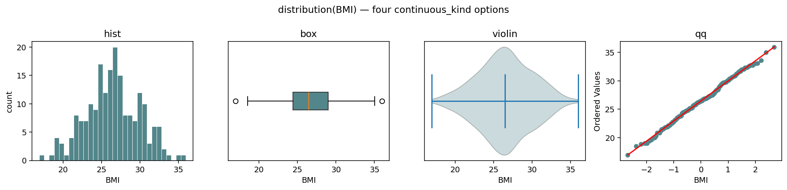
The same BMI series rendered four ways — continuous_kind ∈
{"hist", "box", "violin", "qq"}. The ax= kwarg makes the
primitive composable into a parent figure.¶
fig, axes = plt.subplots(1, 4, figsize=(14, 3.4))
with IGEM() as igem:
for ax, kind in zip(axes, ["hist", "box", "violin", "qq"]):
igem.plot.distribution(
phen.df["BMI"], continuous_kind=kind, ax=ax, title=kind,
)
For categorical and binary columns, the kind argument is auto-set
to "categorical" and the panel becomes a bar chart:

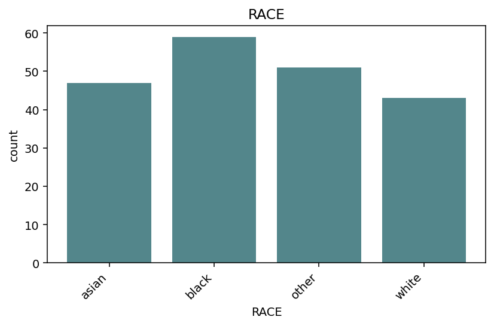
distribution(phen.df["RACE"]) — bar chart of value counts, levels
sorted alphabetically.¶
heatmap — signed_neglog10 for direction + significance¶
The standard transform is "neglog10" (smaller p-value → brighter
cell). When you also have a sign column (e.g. β from
interaction_study(report_betas=True)), transform="signed_neglog10"
combines magnitude with direction in a single color:
igem.plot.heatmap(
interaction.df,
sign_col="term_beta",
transform="signed_neglog10",
cmap="RdBu_r",
title=r"sign($\beta$) $\cdot -\log_{10}$(p)",
)

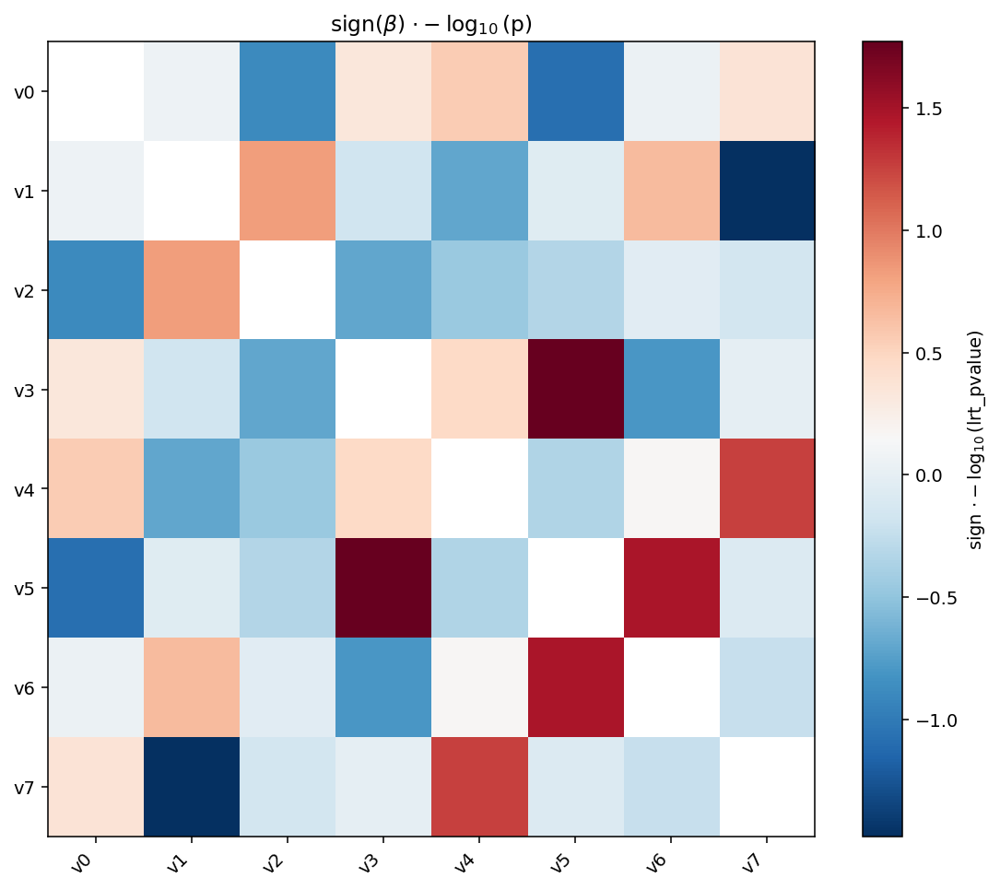
signed_neglog10 is the magnitude \(-\log_{10}(p)\) multiplied by the
sign of sign_col. With a diverging colormap ("RdBu_r") you can
spot direction and significance at a glance — red for positive,
blue for negative, intensity for \(-\log_{10}(p)\).¶
miami_plot — discovery vs replication¶
Two stacked Manhattans share the x-axis; the bottom one is mirrored so the eye reads it bottom-up. The classic use case is replication — top is the discovery cohort, bottom is the validation cohort — but the same shape works for any pair of comparable studies (e.g. sex-stratified GWAS).
igem.plot.miami_plot(
discovery.df,
replication.df,
top_label="discovery",
bottom_label="replication",
cutoffs=[(5e-8, "#C0392B", "--")],
)

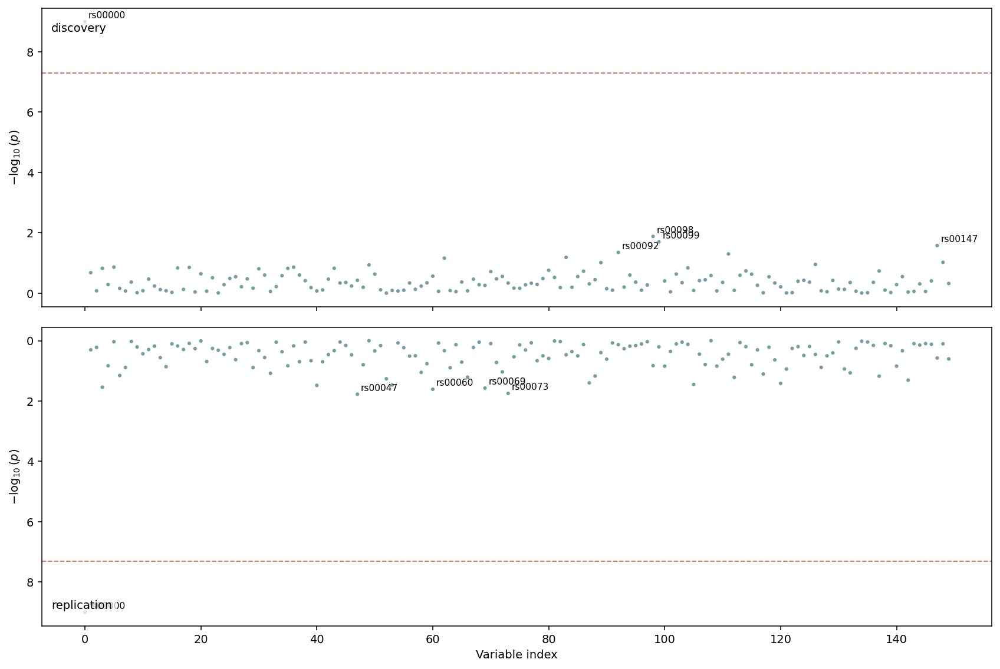
Top half: discovery cohort. Bottom half: replication cohort with inverted y-axis. The dashed line at \(5\times 10^{-8}\) runs across both panels so genome-wide significant hits are easy to align.¶
7. Saving figures to disk¶
Every primitive and bridge accepts output_path=.... Extension
determines the format (matplotlib auto-detects .png, .pdf,
.svg):
igem.plot.from_results(results, kind="manhattan", output_path="manhattan.png")
igem.plot.from_interaction(interaction, output_path="heatmap.svg")
igem.plot.from_describe(phen, output_path="qc.pdf") # multi-page
When output_path is given the file is written and the Figure
is still returned, so you can keep customising it after the save:
fig = igem.plot.from_results(results, kind="manhattan", output_path="m.png")
fig.axes[0].set_title("My custom title")
fig.savefig("m_titled.png", bbox_inches="tight")
For multi-page output, only from_describe accepts a .pdf directly
(it owns its own PdfPages context). For composing heterogeneous
figures (e.g. an EWAS Manhattan and a from_describe PDF) into a
single document, use matplotlib.backends.backend_pdf.PdfPages
manually:
from matplotlib.backends.backend_pdf import PdfPages
with PdfPages("report.pdf") as pdf:
pdf.savefig(igem.plot.from_results(results, kind="manhattan"))
pdf.savefig(igem.plot.from_results(results, kind="qq"))
for fig in igem.plot.from_describe(phen):
pdf.savefig(fig)
A first-class dashboard_pdf composer that wraps this loop, with
provenance and report/-driven label enrichment, is on the
roadmap (deferred — see docs/caderno/2026-05-08__007_*.md).
See also¶
Showcase notebook:
docs/caderno/notebooks/plot_module_examples.ipynbwalks through every primitive and bridge end-to-end with synthetic data — the figures on this page were rendered from it.Upstream: Analyzing data (where
RegressionResultscomes from), Describing data (input tofrom_describe), Modifying data (the “before” side offrom_modify).Annotation: Reporting data — call
RegressionResults.annotate(igem)beforefrom_resultsto pick up chromosome / position columns and unlock the per-chromosome Manhattan layout.Image regeneration: figures are produced by
docs/sphinx/scripts/generate_plot_images.py. Re-run after any primitive’s defaults / colours / labels change.